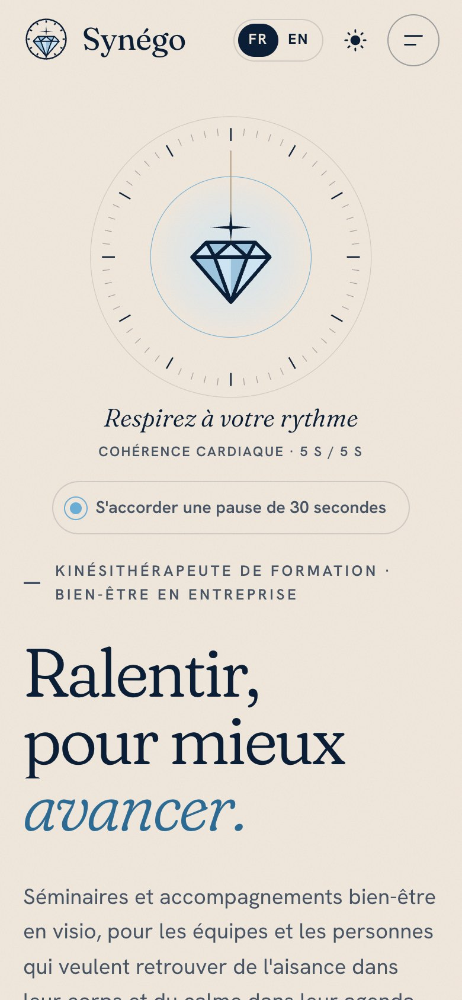
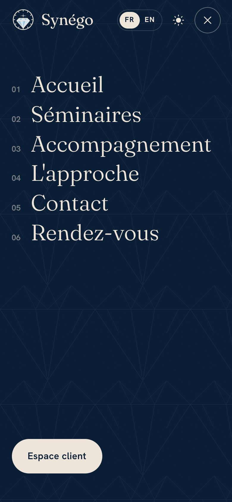
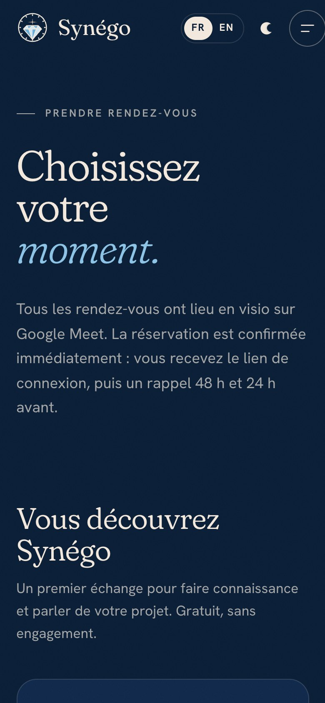

Atelier Simulation de projet Agile · ISITECH
Un service en ligne complet pour une activité de bien-être en entreprise : site vitrine, prise de rendez-vous, espace client sécurisé et back-office de la coach, hébergés sur un VPS administré par l'équipe.
Notre client est une coach bien-être, kinésithérapeute de formation, qui accompagne des entreprises et des particuliers : séminaires d'équipe, ateliers de posture et de respiration, suivi individuel. Elle travaille presque entièrement à distance, en visio Google Meet, sans locaux.
| Ce que le client exprime | Ce que nous en faisons |
|---|---|
| « Je veux que les gens ressentent du calme dès qu'ils arrivent. » | Un site vitrine apaisant et propre à la marque : palette du logo, animations lentes, un exercice de respiration (cohérence cardiaque) dès l'accueil, aucun visuel « générique ». |
| « Mes séminaires doivent être mis en avant. » | Une page Séminaires avec les formats, une journée type et une FAQ, qui mène à une demande de devis. |
| « Pas de prix, tout est sur devis. » | Aucun tarif nulle part sur le site ; chaque appel à l'action mène à un devis ou à un rendez-vous. |
| « Les prospects et mes clients ne réservent pas la même chose. » | Deux parcours de réservation Calendly : audit séminaire et appel découverte pour les prospects ; séance de suivi réservée aux clients signés. Aucune confirmation manuelle. |
| « Mes clients doivent retrouver leurs documents en toute confidentialité. » | Un espace client privé : documents, rendez-vous, demandes ; connexion par e-mail, SMS ou Google. |
| « Je veux gérer tout ça simplement. » | Un back-office pour la coach : tableau du jour, clients, rendez-vous, demandes, notes privées, liaison Calendly en un clic, nomination d'autres coachs. |
| « Je ne suis pas médecin. » | Un avertissement clair : prestations de bien-être et de prévention, ni diagnostic ni traitement. Pas de données de santé dans l'espace client ni dans les notes. |
Non pas « un site » ni « un serveur », mais un service en ligne de bout en bout :
| Rôle | Qui | Engagement |
|---|---|---|
| Product Owner | à compléter | Seul interlocuteur du client, du briefing à la Sprint Review. Parle valeur, jamais technique. Priorise le backlog. |
| Scrum Master | à compléter | Garant du processus. Trace chaque obstacle dans Trello (carte rouge « Obstacle »), en particulier quand un profil Dev attend un profil Réseau, ou l'inverse. |
| Équipe de développement | Luidgi GAUDIN, à compléter | Profils Dev et Réseau ensemble sur chaque story : aucune story « par discipline ». |
Le client a demandé Trello à la place de Jira. Le tableau « Synégo · Sprint 1 » se crée en une
commande à partir du backlog versionné dans le dépôt (docs/scrum/backlog.json, script
scripts/trello_import.py), ce qui garantit que l'outil et le code racontent la même histoire.
| Liste | Contenu |
|---|---|
| Infos sprint | Sprint Goal, Definition of Done (checklist), règles du tableau |
| Product Backlog | 13 stories verticales, chacune avec sa checklist DoD et sa fiche de preuve |
| Sprint Backlog | 47 tâches étiquetées Dev, Réseau ou Mixte, reliées à leur story |
| En cours · À démontrer au PO · Terminé | le flux de travail, mis à jour en temps réel |
| Daily & Rétro | un compte-rendu par Daily (modèle à dupliquer), la rétrospective |
Étiquettes : Dev Réseau Mixte Obstacle Urgence Changement. Le tableau est partagé avec le client (rôle observateur) dès le premier jour.
À la fin du sprint, un visiteur trouve Synégo à une adresse sécurisée, découvre les séminaires, réserve un premier rendez-vous ou demande un devis, et un client retrouve ses documents dans un espace privé. La coach administre le tout depuis un accès réservé, surveillé et sauvegardé.
La base commune imposée, complétée par nos propres critères (en italique) :
.env) ;13 stories, toutes formulées du point de vue du client et toutes mixtes : chacune mobilise au moins un profil Dev et un profil Réseau. Total : 55 points.
| # | Story (valeur pour le client) | Priorité | Pts | Profils |
|---|---|---|---|---|
| S1 | Mes visiteurs accèdent à mon site à une adresse simple et sécurisée | Critique | 5 | Dev Réseau |
| S2 | Mes visiteurs découvrent mes séminaires et me demandent un devis | Critique | 5 | Dev Réseau |
| S7 | Mes informations sensibles ne sont accessibles que par un accès privé | Critique | 8 | Dev Réseau |
| S3 | Un prospect réserve un audit ou un appel découverte sans m'appeler | Haute | 3 | Dev Réseau |
| S4 | Mes clients se connectent par e-mail, SMS ou Google | Haute | 5 | Dev Réseau |
| S5 | Mes clients retrouvent leurs documents en toute confidentialité | Haute | 5 | Dev Réseau |
| S8 | Si une information est effacée par erreur, on la récupère | Haute | 5 | Dev Réseau |
| S9 | Je suis prévenue quand quelque chose ne va pas | Haute | 3 | Dev Réseau |
| S12 | Mes clients n'oublient pas leurs rendez-vous (rappels 48 h et 24 h) | Haute | 5 | Dev Réseau |
| S6 | Mes clients signés réservent eux-mêmes leurs séances de suivi | Moyenne | 3 | Dev Réseau |
| S10 | Mes clients posent leurs questions et suivent les réponses (tickets) | Moyenne | 3 | Dev Réseau |
| S13 | Je garde le fil de chaque client (notes privées de la coach) | Moyenne | 3 | Dev Réseau |
| S11 | Mes visiteurs lisent le site sur téléphone, en anglais ou de nuit | Basse | 2 | Dev Réseau |
Exemples de découpage d'une story en tâches des deux profils :
| Story | Tâches |
|---|---|
| S1 · adresse simple | Réseau VPS durci (pare-feu, SSH par clé), nom de domaine, nginx + certificat Let's Encrypt · Dev build de production servi par nginx, en-têtes de sécurité |
| S7 · accès privé | Réseau base, Adminer et supervision publiés sur l'interface locale seulement, tunnel SSH ou VPN · Dev rôle Coach vérifié côté API, rôle lu en base et jamais dans le jeton |
| S8 · récupération | Réseau sauvegarde chiffrée nocturne · Dev suppression différée des documents (30 jours) · Mixte test de restauration documenté |
| S10 · tickets | Dev espace de demandes côté client et back-office · Réseau sauvegarde et surveillance incluent les tickets · Mixte clarifier avec le client qui utilise les tickets et pour quoi |
Ce journal est reconstitué à partir de l'historique du dépôt, des exécutions de la CI et des journaux du serveur. Les comptes-rendus de Daily détaillés sont sur Trello.
Daily du [date] · présents · Hier · Aujourd'hui · Obstacles (carte créée ? qui la lève ?) · Dev ↔ Réseau : qui attend qui ?
synego.duckdns.org, certificat,
supervision Zabbix, script de sauvegarde).Le client a fait évoluer son besoin tout au long du sprint. Chaque demande a été reformulée par le PO, tracée dans Trello (étiquette Changement), estimée, puis intégrée ou négociée.
Cette demande entrait en conflit avec le cadre imposé : les données sensibles ne sont accessibles que par un tunnel SSH ou un VPN. Plutôt que de dire non, le PO a proposé un compromis :
ADMIN_VPN_ONLY=true) remet le back-office derrière le VPN si le client change d'avis.Dit au client : « Vous gérez vos rendez-vous et vos clients depuis votre téléphone, sans rien installer. Les coffres-forts, eux, restent fermés à clé : seule l'équipe technique peut les ouvrir. »
| Demande du client | Ce que nous avons fait | Statut |
|---|---|---|
| Un site en anglais et un mode sombre | Traduction complète FR/EN vérifiée par TypeScript (aucune clé oubliée), thème sombre qui suit le téléphone ou le choix du visiteur. | Fait |
| Utiliser Trello plutôt que Jira | Backlog versionné et import automatique dans Trello. | Fait |
| Une interface pour la coach, qui relie son Calendly facilement | Back-office : la coach colle son jeton Calendly, choisit quel événement correspond à quel rendez-vous ; plus rien à configurer côté serveur. | Fait |
| Un site 100 % utilisable sur téléphone | Passe responsive sur toutes les pages, menu mobile, vérification à 375-390 px. | Fait |
| Une vitrine plus marquante, sereine, propre à la marque | Cadran-respiration animé, polices auto-hébergées, animations fluides et respect du réglage « réduire les animations ». | Fait |
| Pas de locaux : tout se passe en visio | Textes revus, lien Google Meet récupéré depuis Calendly et envoyé dans le rappel. | Fait |
| Rappels 48 h (avec annulation) et 24 h (lien Meet, plus d'annulation) ; ajout aux agendas | Service de rappels, e-mails aux couleurs de la marque en FR/EN, boutons Google, Apple, Samsung, Outlook et fichier .ics. | Fait |
| Que la coach puisse prendre des notes sur ses clients | Notes privées épinglables dans la fiche client, jamais visibles du client, rappel « pas de données de santé ». | Fait |
| Définir la coach principale, qui peut nommer d'autres coachs | Coach principale définie par configuration ; écran « Coachs » pour inviter ou retirer un coach. | Fait |
| Gérer ses rendez-vous depuis l'espace client | Rendez-vous à venir et passés, déplacement et annulation jusqu'à 24 h avant, réservation sans quitter l'espace. | Fait |
| Retirer le VPN pour la coach | Négocié (encadré ci-dessus). | Fait |
| Un pipeline complet et une mise en production automatique | GitHub Actions (5 contrôles) et déploiement automatique sur le VPS dès que la CI est verte. | Fait |
| Mentions légales et contact avec des données fictives | Entreprise, personne et coordonnées fictives et clairement signalées comme telles ; hébergeur réel. | Fait |
Pour chaque incident : comment il a été repéré, tracé et réparti, puis traité et expliqué au client sans jargon.
| Repéré | Alerte automatique de GitHub (« secret scanning », mention Public leak) sur la clé web Firebase écrite dans le code. En la restreignant, Google signalait en plus des appels à une API de géocodage que Synégo n'utilise pas : quelqu'un testait la clé. |
| Priorisé | En tête du Sprint Backlog : risque de facturation (envoi de SMS frauduleux) et d'abus. |
| Traité |
|
| Dit au client | « Une des clés de votre site avait été rendue visible par erreur. Nous l'avons changée et l'ancienne ne fonctionne plus. Aucune donnée de vos clients n'a été touchée. » |
| Repéré | À l'installation, le dossier du service existait déjà sur le VPS, avec une autre
configuration : un squelette préparé par l'équipe Réseau (nginx, certificat pour synego.duckdns.org,
application de démonstration, base de test) et la supervision Zabbix servie par ce nginx sur le port 8443. |
| Cause | Le travail Dev et Réseau a avancé en parallèle sans inventaire partagé du serveur : exactement le piège « chaque profil dans son coin » décrit dans le sujet. |
| Traité | Rien n'a été supprimé : l'ancien dossier a été mis de côté, la configuration étrangère écartée. Le nginx du service reprend le rôle de l'ancien et continue de servir Zabbix sur 8443 ; le certificat couvre les deux adresses. Vérifié après coup : Zabbix répond toujours. |
| Reste à faire | Deux tâches planifiées de l'équipe Réseau (sauvegarde et renouvellement du certificat) visent encore l'ancien dossier : elles échouent sans dégât. À retirer par l'équipe Réseau, le service ayant les siennes. |
| Dit au client | « Les deux moitiés de l'équipe ont relié leur travail sur le même serveur : votre site et l'outil de surveillance tournent ensemble. » |
| Repéré | Depuis le réseau de l'école, le pare-feu Fortinet affiche « Access Blocked » :
les adresses sslip.io sont classées « Dynamic DNS ». Ce même équipement déchiffre et re-signe le
HTTPS : le cadenas paraît invalide alors que le serveur présente bien un certificat Let's Encrypt valide
(vérifié depuis le serveur et hors du réseau de l'école). |
| Traité | La démo se fera depuis un téléphone en 4G (c'est d'ailleurs la preuve « accessible depuis l'extérieur »). Solution durable : un vrai nom de domaine (quelques euros par an). |
| Dit au client | « Le réseau de l'école filtre ce type d'adresse. Vos visiteurs, eux, y accèdent normalement : regardez sur ce téléphone en 4G. » |
Le dépôt contient une fiche par urgence probable (docs/scrum/urgences.md) :
site hors ligne, donnée effacée, compte compromis, attaque, certificat expiré, disque plein, panne d'un
service partenaire. Chacune donne la commande à lancer et la phrase à dire au client.
| Brique | Notre solution | Valeur pour le client | État |
|---|---|---|---|
| 1. Hébergement VPS | VPS Linode sous Linux Ubuntu 26.10, à jour à l'installation (« 0 updates »). Services en conteneurs Docker. Pare-feu UFW : seuls SSH, 80, 443, 8443 (Zabbix) et 51820/udp sont ouverts ; tout le reste écoute sur l'interface locale. Pourquoi Linux : standard des serveurs web, léger, gratuit, toutes nos briques y tournent nativement. | Le site est en ligne en permanence, chez un hébergeur reconnu. | Fait |
| 2. Accès sécurisé aux données | Base de données, Adminer, Uptime Kuma, Mailpit et zone d'administration publiés sur 127.0.0.1 uniquement :
refusés depuis Internet, accessibles par tunnel SSH (preuve en partie 08). Scripts WireGuard
prêts (deploy/vps/02-wireguard.sh) pour passer au VPN. |
Même avec un mot de passe volé, personne n'atteint les données brutes depuis Internet. | Fait |
| 3. Base SQL | PostgreSQL 17, schéma synego. Comptes séparés : synego_app (l'API : lecture/écriture des lignes, aucun
droit sur la structure), synego_owner (migrations), synego_backup et synego_readonly (lecture seule). |
Chaque programme n'a que les droits dont il a besoin. | Fait |
| 4. Sauvegarde et restauration | Sauvegarde chiffrée (AES-256) chaque nuit à 2 h, gardée 14 jours, et avant chaque mise en production. Restauration testée sur une copie de la base (preuve en partie 08). Documents supprimés conservés 30 jours. | Une erreur ne fait rien perdre. | Fait |
| 5. Espace de tickets | Développé dans le service : demandes de devis et de contact depuis le site, demandes des clients depuis leur espace, fil de réponses, statuts Envoyée / En cours / Close dans le back-office. Pourquoi développé : les demandes sont liées au compte du client et à ses rendez-vous, sans outil de plus à apprendre. | Aucune demande perdue dans une boîte mail. | Fait |
| Surveillance (DoD) | Point de santé /api/health (base + stockage), Uptime Kuma déployé (accès par tunnel), supervision
Zabbix de l'équipe Réseau, CI qui bloque toute version cassée. |
On est prévenu avant les clients. | Partiel |
Le moniteur et la notification d'alerte d'Uptime Kuma (ou un déclencheur Zabbix sur /api/health)
doivent encore être configurés et testés devant le PO avant la Sprint Review. Le VPN WireGuard est prêt mais non
activé en production : l'accès privé passe aujourd'hui par tunnel SSH, ce que le cadre autorise.
Pour chaque story : ce que veut le client, le test que le PO montrera, le résultat obtenu et les cases de la Definition of Done cochées. Les résultats ci-dessous sont les sorties réelles des tests, lancés sur le serveur de production le 4 novembre 2026.
# depuis Internet https://172-239-9-200.sslip.io/ 200 certificat vérifié https://172-239-9-200.sslip.io/api/health 200 {"status":"ok","database":true,"documents":true} http://172-239-9-200.sslip.io/ 301 → https://… # certificat émetteur : Let's Encrypt (YE2) · noms : 172-239-9-200.sslip.io, synego.duckdns.org · valide jusqu'au 1er février 2027
# sans tunnel, depuis Internet port 8082 (Adminer, base) refusé port 3001 (Uptime Kuma) refusé port 8025 (Mailpit) refusé port 8444 (zone admin) refusé port 5432 (PostgreSQL) refusé # avec un tunnel SSH (clé de l'équipe) Adminer (base) 200 Uptime Kuma 302 → tableau de bord Zone admin (8444) 200 # API d'administration sans être connecté https://…/api/admin/overview 401
1) Sauvegarde automatique la plus récente : synego_2026-11-04_090724.dump.enc (chiffrée AES-256) 2) Base réelle : 1 compte(s), 0 ticket(s), 0 rendez-vous, 0 note(s) 3) Copie restaurée : 1 compte(s), 0 ticket(s), 0 rendez-vous, 0 note(s) 4) Effacement volontaire, dans la copie, du compte 01a1a3be… (rôle Coach) Copie après effacement : 0 compte(s) 5) Nouvelle restauration : 1 compte(s) Compte effacé retrouvé : OUI 6) Copie temporaire supprimée. Base réelle inchangée : 1 compte(s)
Pendant la démo : supprimer un document dans l'espace client, lancer restore.sh,
le document réapparaît (le fichier est conservé 30 jours).
[synego-deploy] 09:18:26 CI en cours pour 26ed77d : on attend le feu vert.
[synego-deploy] 09:20:32 Déploiement 0728593 → 26ed77d : Contenu : mentions légales…
[backup] 09:20:32 OK : synego_2026-11-04_082032.dump.enc (24.0K)
[synego-deploy] 09:20:43 En ligne : 26ed77d.



| Depuis | Vers | Port | Autorisé | Pourquoi |
|---|---|---|---|---|
| Internet | nginx | 80, 443 | Oui | Site et API publics (80 redirige vers 443) |
| Internet | Back-office /admin | 443 | Oui | Après connexion et rôle Coach vérifié en base |
| Internet | Zabbix (équipe Réseau) | 8443 | Oui | Interface de supervision, avec son propre compte |
| Internet | SSH | 22 | Oui | Administration par l'équipe (clé) |
| Internet | PostgreSQL, Adminer, Uptime Kuma, Mailpit, zone admin | 5432, 8082, 3001, 8025, 8444 | Non | Écoutent sur 127.0.0.1 : tunnel SSH obligatoire |
| nginx | API | 8080 (Docker) | Oui | Seul point d'entrée de l'API |
| API | PostgreSQL | 5432 (Docker) | Oui | Compte synego_app, sans droit sur la structure |
| Sauvegarde | PostgreSQL | 5432 (Docker) | Oui | Compte synego_backup, lecture seule |
| API | Firebase, Calendly, SMTP | 443, 587 | Oui | Vérification des jetons, rendez-vous, rappels |
| Serveur | GitHub | 443 | Oui | Récupère la branche main, lit l'état de la CI |
Un port publié par Docker passe outre UFW. C'est pourquoi seuls 80, 443 et 8443 sont publiés sur
toutes les interfaces ; tous les autres sont liés explicitement à 127.0.0.1 (variable ADMIN_BIND_IP).
✓ fait et prouvé · ◐ partiel · ○ à faire avant ou pendant la Sprint Review. Colonnes : Ext. = accessible de l'extérieur · HTTPS · Règles = règles d'accès documentées · Schéma · Surv. = surveillé avec alerte · Privé = données sensibles par tunnel · Sauv. = sauvegarde et restauration testées · Accept. = démontré au PO et accepté.
| Story | Ext. | HTTPS | Règles | Schéma | Surv. | Privé | Sauv. | Accept. |
|---|---|---|---|---|---|---|---|---|
| S1 · adresse simple et sécurisée | ✓ | ✓ | ✓ | ✓ | ◐ | ✓ | ✓ | ○ |
| S2 · séminaires et devis | ✓ | ✓ | ✓ | ✓ | ◐ | ✓ | ✓ | ○ |
| S3 · réservation prospects | ✓ | ✓ | ✓ | ✓ | ◐ | ✓ | ✓ | ○ * |
| S4 · connexion e-mail, SMS, Google | ✓ | ✓ | ✓ | ✓ | ◐ | ✓ | ✓ | ○ |
| S5 · documents confidentiels | ✓ | ✓ | ✓ | ✓ | ◐ | ✓ | ✓ | ○ |
| S6 · séances réservées aux clients signés | ✓ | ✓ | ✓ | ✓ | ◐ | ✓ | ✓ | ○ * |
| S7 · accès privé aux données | ✓ | ✓ | ✓ | ✓ | ◐ | ✓ | ✓ | ○ |
| S8 · récupération après effacement | ✓ | ✓ | ✓ | ✓ | ◐ | ✓ | ✓ | ○ |
| S9 · être prévenue en cas de panne | ✓ | ✓ | ✓ | ✓ | ○ | ✓ | ✓ | ○ |
| S10 · tickets | ✓ | ✓ | ✓ | ✓ | ◐ | ✓ | ✓ | ○ |
| S11 · mobile, anglais, nuit | ✓ | ✓ | ✓ | ✓ | ◐ | ✓ | ✓ | ○ |
| S12 · rappels 48 h / 24 h | ✓ | ✓ | ✓ | ✓ | ◐ | ✓ | ✓ | ○ ** |
| S13 · notes de la coach | ✓ | ✓ | ✓ | ✓ | ◐ | ✓ | ✓ | ○ |
* La coach doit relier son compte Calendly depuis le back-office (les liens de production sont encore
ceux par défaut) et aligner les durées de ses événements Calendly sur les textes du site (45, 20 et 60 minutes).
** En production, aucun serveur d'e-mails réel n'est configuré : les rappels arrivent dans Mailpit (accessible par tunnel).
Un compte SMTP (par exemple Brevo) suffit pour les envoyer réellement.
Préparée à partir des faits du sprint, à compléter et valider en équipe jeudi (sans le client), puis postée sur Trello.
| Ce qui a marché | Ce qui a bloqué |
|---|---|
|
|
| Action | Qui | Quand |
|---|---|---|
Configurer et tester l'alerte (Uptime Kuma ou Zabbix) sur /api/health, notification sur téléphone | Réseau + Dev | jeudi matin |
| Retirer les deux tâches planifiées obsolètes ; tenir l'inventaire du serveur dans le dépôt | Réseau | jeudi matin |
| Relier Calendly depuis le back-office, aligner les durées des événements | PO avec la coach | avant la démo |
| Passer SSH en clé uniquement, changer le mot de passe root | Réseau | sprint suivant |
| Sauvegardes copiées hors du VPS ; vrai nom de domaine (non filtré « Dynamic DNS ») ; SMTP réel pour les rappels | Réseau, Dev, PO | sprint suivant |
Le PO raconte, un membre de l'équipe manipule. On montre, on ne raconte pas. Tout se fait sur un téléphone en 4G. Le détail des écrans et de l'exploitation figure dans la documentation utilisateur et la documentation technique.
| # | Ce que le client veut | Ce qu'on montre |
|---|---|---|
| 1 | « Mes visiteurs me trouvent à une adresse simple » | Ouvrir l'adresse en 4G : cadenas, FR puis EN, thème sombre |
| 2 | « Je mets en avant mes séminaires, sans prix » | Page Séminaires, « sur devis » ; envoyer une demande de devis |
| 3 | « Un prospect prend rendez-vous sans m'appeler » | Page Rendez-vous : réserver un audit dans Calendly, l'ajouter à son agenda |
| 4 | « Mes clients ont un espace privé » | Connexion Google puis par SMS ; documents, rendez-vous, demandes |
| 5 | « Les séances de suivi sont pour mes clients signés » | Compte non signé : séance verrouillée ; back-office : « Client signé » ; la séance s'ouvre |
| 6 | « Mes informations sensibles sont protégées » | Sans tunnel : Adminer ne répond pas ; avec le tunnel SSH : il s'ouvre, en lecture seule |
| 7 | « Une erreur ne fait rien perdre » | Supprimer un document, lancer la restauration, il réapparaît |
| 8 | « Mes clients posent leurs questions » | La demande de l'étape 2 : réponse depuis le back-office, visible côté client, clôture |
| 9 | « Je sais quand quelque chose ne va pas » | Arrêter l'API : l'alerte arrive sur le téléphone ; relancer |
docker compose exec backup backup.sh.